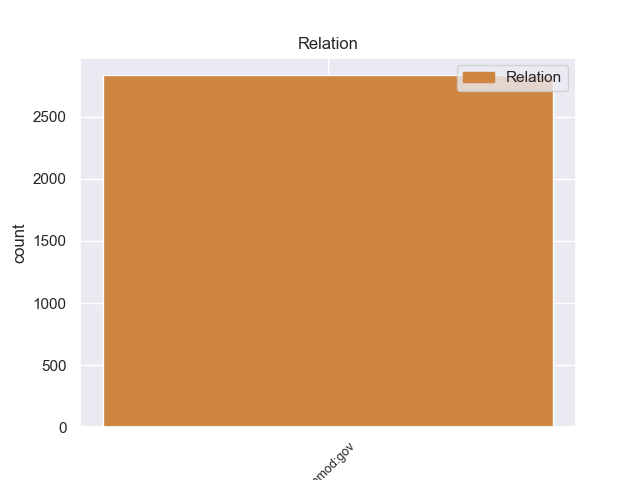
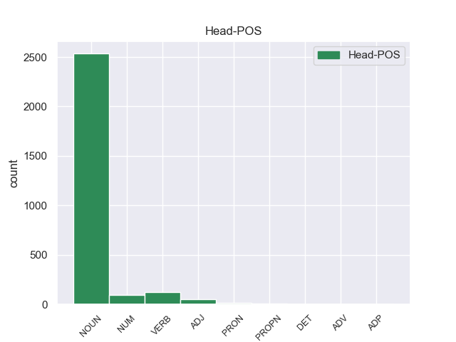
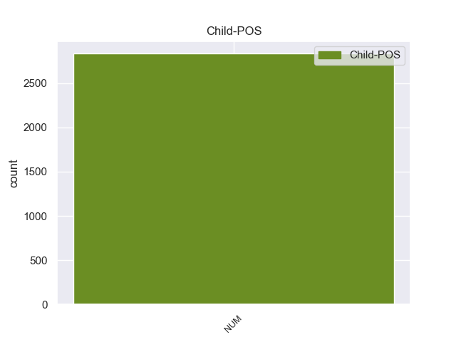

Distribution of features within this leaf



Morphosyntax Rules sorted by frequency.
- When the dependent token is the nominal subject(nsubj) of the head token, and the dependent token is NOUN, the Case needs to be Nom.
1 Он _ _ _ _ 0 _ _ _
2 задумался _ _ _ _ 0 _ _ _
3 , _ _ _ _ 0 _ _ _
4 чуть _ _ _ _ 0 _ _ _
5 перекосив _ _ _ _ 0 _ _ _
6 худенькое _ _ _ _ 0 _ _ _
7 лицо _ _ _ _ 0 _ _ _
8 , _ _ _ _ 0 _ _ _
9 и _ _ _ _ 0 _ _ _
10 даже _ _ _ _ 0 _ _ _
11 перестал _ _ _ _ 0 _ _ _
12 выдергивать _ _ _ _ 0 _ _ _
13 цветы _ _ _ _ 0 _ _ _
14 и _ _ _ _ 0 _ _ _
15 травинки _ _ _ _ 0 _ _ _
16 , _ _ _ _ 0 _ _ _
17 в _ _ _ _ 0 _ _ _
18 его _ _ _ _ 0 _ _ _
19 коричневых _ _ _ _ 0 _ _ _
20 глазах _ _ _ _ 0 _ _ _
21 появилась появиться VERB _ Aspect=Perf|Gender=Fem|Mood=Ind|Number=Sing|Tense=Past|VerbForm=Fin|Voice=Mid 0 _ _ _
22 боль боль NOUN _ Animacy=Inan|Case=Nom|Gender=Fem|Number=Sing 21 nsubj 21:nsubj _
23 - _ _ _ _ 0 _ _ _
24 так _ _ _ _ 0 _ _ _
25 трудно _ _ _ _ 0 _ _ _
26 вложить _ _ _ _ 0 _ _ _
27 в _ _ _ _ 0 _ _ _
28 чужую _ _ _ _ 0 _ _ _
29 душу _ _ _ _ 0 _ _ _
30 самые _ _ _ _ 0 _ _ _
31 простые _ _ _ _ 0 _ _ _
32 и _ _ _ _ 0 _ _ _
33 очевидные _ _ _ _ 0 _ _ _
34 истины _ _ _ _ 0 _ _ _
35 ! _ _ _ _ 0 _ _ _
1 Но _ _ _ _ 0 _ _ _
2 кто-то кто-то PRON _ Case=Nom 3 nsubj 3:nsubj _
3 идет идти VERB _ Aspect=Imp|Mood=Ind|Number=Sing|Person=3|Tense=Pres|VerbForm=Fin|Voice=Act 0 _ _ _
4 мне _ _ _ _ 0 _ _ _
5 навстречу _ _ _ _ 0 _ _ _
6 и _ _ _ _ 0 _ _ _
7 , _ _ _ _ 0 _ _ _
8 может _ _ _ _ 0 _ _ _
9 быть _ _ _ _ 0 _ _ _
10 , _ _ _ _ 0 _ _ _
11 прошел _ _ _ _ 0 _ _ _
12 уже _ _ _ _ 0 _ _ _
13 пол _ _ _ _ 0 _ _ _
14 пути _ _ _ _ 0 _ _ _
15 … _ _ _ _ 0 _ _ _
1 Весь _ _ _ _ 0 _ _ _
2 лес лес NOUN _ Animacy=Inan|Case=Nom|Gender=Masc|Number=Sing 4 nsubj:pass 4:nsubj:pass _
3 был _ _ _ _ 0 _ _ _
4 населен населить VERB _ Aspect=Perf|Gender=Masc|Number=Sing|Tense=Past|Variant=Short|VerbForm=Part|Voice=Pass 0 _ _ _
5 голосами _ _ _ _ 0 _ _ _
6 прошлого _ _ _ _ 0 _ _ _
7 , _ _ _ _ 0 _ _ _
8 и _ _ _ _ 0 _ _ _
9 я _ _ _ _ 0 _ _ _
10 впервые _ _ _ _ 0 _ _ _
11 с _ _ _ _ 0 _ _ _
12 ошеломляющей _ _ _ _ 0 _ _ _
13 силой _ _ _ _ 0 _ _ _
14 ощутил _ _ _ _ 0 _ _ _
15 , _ _ _ _ 0 _ _ _
16 как _ _ _ _ 0 _ _ _
17 много _ _ _ _ 0 _ _ _
18 пробыл _ _ _ _ 0 _ _ _
19 на _ _ _ _ 0 _ _ _
20 этом _ _ _ _ 0 _ _ _
21 свете _ _ _ _ 0 _ _ _
22 и _ _ _ _ 0 _ _ _
23 что _ _ _ _ 0 _ _ _
24 прожитое _ _ _ _ 0 _ _ _
25 - _ _ _ _ 0 _ _ _
26 это _ _ _ _ 0 _ _ _
27 не _ _ _ _ 0 _ _ _
28 разбег _ _ _ _ 0 _ _ _
29 для _ _ _ _ 0 _ _ _
30 взлета _ _ _ _ 0 _ _ _
31 в _ _ _ _ 0 _ _ _
32 какую-то _ _ _ _ 0 _ _ _
33 будущую _ _ _ _ 0 _ _ _
34 , _ _ _ _ 0 _ _ _
35 настоящую _ _ _ _ 0 _ _ _
36 жизнь _ _ _ _ 0 _ _ _
37 , _ _ _ _ 0 _ _ _
38 что _ _ _ _ 0 _ _ _
39 это _ _ _ _ 0 _ _ _
40 уже _ _ _ _ 0 _ _ _
41 жизнь _ _ _ _ 0 _ _ _
42 , _ _ _ _ 0 _ _ _
43 в _ _ _ _ 0 _ _ _
44 которой _ _ _ _ 0 _ _ _
45 все _ _ _ _ 0 _ _ _
46 связано _ _ _ _ 0 _ _ _
47 : _ _ _ _ 0 _ _ _
48 далекое _ _ _ _ 0 _ _ _
49 прошлое _ _ _ _ 0 _ _ _
49.1 _ _ _ _ _ 0 _ _ _
50 с _ _ _ _ 0 _ _ _
51 настоящим _ _ _ _ 0 _ _ _
52 , _ _ _ _ 0 _ _ _
53 а _ _ _ _ 0 _ _ _
54 если _ _ _ _ 0 _ _ _
55 мне _ _ _ _ 0 _ _ _
56 суждено _ _ _ _ 0 _ _ _
57 будущее _ _ _ _ 0 _ _ _
58 , _ _ _ _ 0 _ _ _
59 то _ _ _ _ 0 _ _ _
60 и _ _ _ _ 0 _ _ _
61 оно _ _ _ _ 0 _ _ _
62 окажется _ _ _ _ 0 _ _ _
63 нерасторжимо _ _ _ _ 0 _ _ _
64 связанным _ _ _ _ 0 _ _ _
65 с _ _ _ _ 0 _ _ _
66 пережитым _ _ _ _ 0 _ _ _
67 ; _ _ _ _ 0 _ _ _
1 Одно _ _ _ _ 0 _ _ _
2 красное _ _ _ _ 0 _ _ _
3 перышко _ _ _ _ 0 _ _ _
4 Павлов Павлов PROPN _ Animacy=Anim|Case=Nom|Gender=Masc|Number=Sing 5 nsubj 5:nsubj _
5 взял брать VERB _ Aspect=Perf|Gender=Masc|Mood=Ind|Number=Sing|Tense=Past|VerbForm=Fin|Voice=Act 0 _ _ _
6 с _ _ _ _ 0 _ _ _
7 собой _ _ _ _ 0 _ _ _
8 : _ _ _ _ 0 _ _ _
9 он _ _ _ _ 0 _ _ _
10 уже _ _ _ _ 0 _ _ _
11 научил _ _ _ _ 0 _ _ _
12 близнецов _ _ _ _ 0 _ _ _
13 грубости _ _ _ _ 0 _ _ _
14 недоверия _ _ _ _ 0 _ _ _
15 и _ _ _ _ 0 _ _ _
16 потому _ _ _ _ 0 _ _ _
17 нуждался _ _ _ _ 0 _ _ _
18 в _ _ _ _ 0 _ _ _
19 вещественном _ _ _ _ 0 _ _ _
20 доказательстве _ _ _ _ 0 _ _ _
21 . _ _ _ _ 0 _ _ _
1 Весь _ _ _ _ 0 _ _ _
2 лес _ _ _ _ 0 _ _ _
3 был _ _ _ _ 0 _ _ _
4 населен _ _ _ _ 0 _ _ _
5 голосами _ _ _ _ 0 _ _ _
6 прошлого _ _ _ _ 0 _ _ _
7 , _ _ _ _ 0 _ _ _
8 и _ _ _ _ 0 _ _ _
9 я _ _ _ _ 0 _ _ _
10 впервые _ _ _ _ 0 _ _ _
11 с _ _ _ _ 0 _ _ _
12 ошеломляющей _ _ _ _ 0 _ _ _
13 силой _ _ _ _ 0 _ _ _
14 ощутил _ _ _ _ 0 _ _ _
15 , _ _ _ _ 0 _ _ _
16 как _ _ _ _ 0 _ _ _
17 много _ _ _ _ 0 _ _ _
18 пробыл _ _ _ _ 0 _ _ _
19 на _ _ _ _ 0 _ _ _
20 этом _ _ _ _ 0 _ _ _
21 свете _ _ _ _ 0 _ _ _
22 и _ _ _ _ 0 _ _ _
23 что _ _ _ _ 0 _ _ _
24 прожитое _ _ _ _ 0 _ _ _
25 - _ _ _ _ 0 _ _ _
26 это _ _ _ _ 0 _ _ _
27 не _ _ _ _ 0 _ _ _
28 разбег _ _ _ _ 0 _ _ _
29 для _ _ _ _ 0 _ _ _
30 взлета _ _ _ _ 0 _ _ _
31 в _ _ _ _ 0 _ _ _
32 какую-то _ _ _ _ 0 _ _ _
33 будущую _ _ _ _ 0 _ _ _
34 , _ _ _ _ 0 _ _ _
35 настоящую _ _ _ _ 0 _ _ _
36 жизнь _ _ _ _ 0 _ _ _
37 , _ _ _ _ 0 _ _ _
38 что _ _ _ _ 0 _ _ _
39 это _ _ _ _ 0 _ _ _
40 уже _ _ _ _ 0 _ _ _
41 жизнь _ _ _ _ 0 _ _ _
42 , _ _ _ _ 0 _ _ _
43 в _ _ _ _ 0 _ _ _
44 которой _ _ _ _ 0 _ _ _
45 все все PRON _ Animacy=Inan|Case=Nom|Gender=Neut|Number=Sing 46 nsubj:pass 46:nsubj:pass _
46 связано связать VERB _ Aspect=Perf|Gender=Neut|Number=Sing|Tense=Past|Variant=Short|VerbForm=Part|Voice=Pass 0 _ _ _
47 : _ _ _ _ 0 _ _ _
48 далекое _ _ _ _ 0 _ _ _
49 прошлое _ _ _ _ 0 _ _ _
49.1 _ _ _ _ _ 0 _ _ _
50 с _ _ _ _ 0 _ _ _
51 настоящим _ _ _ _ 0 _ _ _
52 , _ _ _ _ 0 _ _ _
53 а _ _ _ _ 0 _ _ _
54 если _ _ _ _ 0 _ _ _
55 мне _ _ _ _ 0 _ _ _
56 суждено _ _ _ _ 0 _ _ _
57 будущее _ _ _ _ 0 _ _ _
58 , _ _ _ _ 0 _ _ _
59 то _ _ _ _ 0 _ _ _
60 и _ _ _ _ 0 _ _ _
61 оно _ _ _ _ 0 _ _ _
62 окажется _ _ _ _ 0 _ _ _
63 нерасторжимо _ _ _ _ 0 _ _ _
64 связанным _ _ _ _ 0 _ _ _
65 с _ _ _ _ 0 _ _ _
66 пережитым _ _ _ _ 0 _ _ _
67 ; _ _ _ _ 0 _ _ _
1 По _ _ _ _ 0 _ _ _
2 опушкам _ _ _ _ 0 _ _ _
3 , _ _ _ _ 0 _ _ _
4 правда _ _ _ _ 0 _ _ _
5 , _ _ _ _ 0 _ _ _
6 белые белый ADJ _ Case=Nom|Degree=Pos|Number=Plur 7 nsubj 7:nsubj _
7 попадались попадаться VERB _ Aspect=Imp|Mood=Ind|Number=Plur|Tense=Past|VerbForm=Fin|Voice=Mid 0 _ _ _
8 не _ _ _ _ 0 _ _ _
9 часто _ _ _ _ 0 _ _ _
10 - _ _ _ _ 0 _ _ _
11 слишком _ _ _ _ 0 _ _ _
12 долго _ _ _ _ 0 _ _ _
13 стояла _ _ _ _ 0 _ _ _
14 засушливая _ _ _ _ 0 _ _ _
15 жара _ _ _ _ 0 _ _ _
16 , _ _ _ _ 0 _ _ _
17 и _ _ _ _ 0 _ _ _
18 гриб _ _ _ _ 0 _ _ _
19 прятался _ _ _ _ 0 _ _ _
20 под _ _ _ _ 0 _ _ _
21 ели _ _ _ _ 0 _ _ _
22 , _ _ _ _ 0 _ _ _
23 в _ _ _ _ 0 _ _ _
24 их _ _ _ _ 0 _ _ _
25 сыроватую _ _ _ _ 0 _ _ _
26 темь _ _ _ _ 0 _ _ _
27 . _ _ _ _ 0 _ _ _
1 Старший _ _ _ _ 0 _ _ _
2 из _ _ _ _ 0 _ _ _
3 близнецов _ _ _ _ 0 _ _ _
4 осторожно _ _ _ _ 0 _ _ _
5 взял _ _ _ _ 0 _ _ _
6 перышко _ _ _ _ 0 _ _ _
7 , _ _ _ _ 0 _ _ _
8 провел _ _ _ _ 0 _ _ _
9 им _ _ _ _ 0 _ _ _
10 по _ _ _ _ 0 _ _ _
11 щеке _ _ _ _ 0 _ _ _
12 и _ _ _ _ 0 _ _ _
13 передал _ _ _ _ 0 _ _ _
14 брату _ _ _ _ 0 _ _ _
15 , _ _ _ _ 0 _ _ _
16 тот тот DET _ Case=Nom|Gender=Masc|Number=Sing 17 nsubj 17:nsubj _
17 повторил повторить VERB _ Aspect=Perf|Gender=Masc|Mood=Ind|Number=Sing|Tense=Past|VerbForm=Fin|Voice=Act 0 _ _ _
18 его _ _ _ _ 0 _ _ _
19 жест _ _ _ _ 0 _ _ _
20 . _ _ _ _ 0 _ _ _
1 Вдова _ _ _ _ 0 _ _ _
2 третьего _ _ _ _ 0 _ _ _
3 во _ _ _ _ 0 _ _ _
4 втором _ _ _ _ 0 _ _ _
5 ряду _ _ _ _ 0 _ _ _
6 приходилась _ _ _ _ 0 _ _ _
7 Павлову _ _ _ _ 0 _ _ _
8 матерью _ _ _ _ 0 _ _ _
9 , _ _ _ _ 0 _ _ _
10 дочь _ _ _ _ 0 _ _ _
11 - _ _ _ _ 0 _ _ _
11.1 _ _ _ _ _ 0 _ _ _
12 сестрой _ _ _ _ 0 _ _ _
13 , _ _ _ _ 0 _ _ _
14 обе оба NUM _ Case=Nom|Gender=Fem 15 nsubj 15:nsubj _
15 требовали требовать VERB _ Aspect=Imp|Mood=Ind|Number=Plur|Tense=Past|VerbForm=Fin|Voice=Act 0 _ _ _
16 постоянной _ _ _ _ 0 _ _ _
17 заботы _ _ _ _ 0 _ _ _
18 . _ _ _ _ 0 _ _ _
1 Уже _ _ _ _ 0 _ _ _
2 на _ _ _ _ 0 _ _ _
3 первой _ _ _ _ 0 _ _ _
4 сессии _ _ _ _ 0 _ _ _
5 вновь _ _ _ _ 0 _ _ _
6 избранного _ _ _ _ 0 _ _ _
7 Верховного _ _ _ _ 0 _ _ _
8 Совета _ _ _ _ 0 _ _ _
9 СССР _ _ _ _ 0 _ _ _
10 будут _ _ _ _ 0 _ _ _
11 вынесены вынести VERB _ Aspect=Perf|Number=Plur|Tense=Past|Variant=Short|VerbForm=Part|Voice=Pass 0 _ _ _
12 Законы Закон PROPN _ Animacy=Inan|Case=Nom|Gender=Masc|Number=Plur 11 nsubj:pass 11:nsubj:pass _
13 о _ _ _ _ 0 _ _ _
14 профсоюзах _ _ _ _ 0 _ _ _
15 , _ _ _ _ 0 _ _ _
16 о _ _ _ _ 0 _ _ _
17 молодежи _ _ _ _ 0 _ _ _
18 , _ _ _ _ 0 _ _ _
19 о _ _ _ _ 0 _ _ _
20 печати _ _ _ _ 0 _ _ _
21 , _ _ _ _ 0 _ _ _
22 о _ _ _ _ 0 _ _ _
23 гласности _ _ _ _ 0 _ _ _
24 в _ _ _ _ 0 _ _ _
25 работе _ _ _ _ 0 _ _ _
26 государственных _ _ _ _ 0 _ _ _
27 органов _ _ _ _ 0 _ _ _
28 и _ _ _ _ 0 _ _ _
29 общественных _ _ _ _ 0 _ _ _
30 организаций _ _ _ _ 0 _ _ _
31 , _ _ _ _ 0 _ _ _
32 о _ _ _ _ 0 _ _ _
33 добровольных _ _ _ _ 0 _ _ _
34 обществах _ _ _ _ 0 _ _ _
35 , _ _ _ _ 0 _ _ _
36 об _ _ _ _ 0 _ _ _
37 Основах _ _ _ _ 0 _ _ _
38 уголовного _ _ _ _ 0 _ _ _
39 законодательства _ _ _ _ 0 _ _ _
40 , _ _ _ _ 0 _ _ _
41 пенсионном _ _ _ _ 0 _ _ _
42 обеспечении _ _ _ _ 0 _ _ _
43 и _ _ _ _ 0 _ _ _
44 другие _ _ _ _ 0 _ _ _
45 . _ _ _ _ 0 _ _ _
1 Весь _ _ _ _ 0 _ _ _
2 лес _ _ _ _ 0 _ _ _
3 был _ _ _ _ 0 _ _ _
4 населен _ _ _ _ 0 _ _ _
5 голосами _ _ _ _ 0 _ _ _
6 прошлого _ _ _ _ 0 _ _ _
7 , _ _ _ _ 0 _ _ _
8 и _ _ _ _ 0 _ _ _
9 я _ _ _ _ 0 _ _ _
10 впервые _ _ _ _ 0 _ _ _
11 с _ _ _ _ 0 _ _ _
12 ошеломляющей _ _ _ _ 0 _ _ _
13 силой _ _ _ _ 0 _ _ _
14 ощутил _ _ _ _ 0 _ _ _
15 , _ _ _ _ 0 _ _ _
16 как _ _ _ _ 0 _ _ _
17 много _ _ _ _ 0 _ _ _
18 пробыл _ _ _ _ 0 _ _ _
19 на _ _ _ _ 0 _ _ _
20 этом _ _ _ _ 0 _ _ _
21 свете _ _ _ _ 0 _ _ _
22 и _ _ _ _ 0 _ _ _
23 что _ _ _ _ 0 _ _ _
24 прожитое прожить VERB _ Aspect=Perf|Case=Nom|Gender=Neut|Number=Sing|Tense=Past|VerbForm=Part|Voice=Pass 28 nsubj 28:nsubj _
25 - _ _ _ _ 0 _ _ _
26 это _ _ _ _ 0 _ _ _
27 не _ _ _ _ 0 _ _ _
28 разбег разбег NOUN _ Animacy=Inan|Case=Nom|Gender=Masc|Number=Sing 0 _ _ _
29 для _ _ _ _ 0 _ _ _
30 взлета _ _ _ _ 0 _ _ _
31 в _ _ _ _ 0 _ _ _
32 какую-то _ _ _ _ 0 _ _ _
33 будущую _ _ _ _ 0 _ _ _
34 , _ _ _ _ 0 _ _ _
35 настоящую _ _ _ _ 0 _ _ _
36 жизнь _ _ _ _ 0 _ _ _
37 , _ _ _ _ 0 _ _ _
38 что _ _ _ _ 0 _ _ _
39 это _ _ _ _ 0 _ _ _
40 уже _ _ _ _ 0 _ _ _
41 жизнь _ _ _ _ 0 _ _ _
42 , _ _ _ _ 0 _ _ _
43 в _ _ _ _ 0 _ _ _
44 которой _ _ _ _ 0 _ _ _
45 все _ _ _ _ 0 _ _ _
46 связано _ _ _ _ 0 _ _ _
47 : _ _ _ _ 0 _ _ _
48 далекое _ _ _ _ 0 _ _ _
49 прошлое _ _ _ _ 0 _ _ _
49.1 _ _ _ _ _ 0 _ _ _
50 с _ _ _ _ 0 _ _ _
51 настоящим _ _ _ _ 0 _ _ _
52 , _ _ _ _ 0 _ _ _
53 а _ _ _ _ 0 _ _ _
54 если _ _ _ _ 0 _ _ _
55 мне _ _ _ _ 0 _ _ _
56 суждено _ _ _ _ 0 _ _ _
57 будущее _ _ _ _ 0 _ _ _
58 , _ _ _ _ 0 _ _ _
59 то _ _ _ _ 0 _ _ _
60 и _ _ _ _ 0 _ _ _
61 оно _ _ _ _ 0 _ _ _
62 окажется _ _ _ _ 0 _ _ _
63 нерасторжимо _ _ _ _ 0 _ _ _
64 связанным _ _ _ _ 0 _ _ _
65 с _ _ _ _ 0 _ _ _
66 пережитым _ _ _ _ 0 _ _ _
67 ; _ _ _ _ 0 _ _ _
1 Главная главный ADJ _ Case=Nom|Degree=Pos|Gender=Fem|Number=Sing 4 nsubj:pass 4:nsubj:pass _
2 из _ _ _ _ 0 _ _ _
3 задач _ _ _ _ 0 _ _ _
4 связана связать VERB _ Aspect=Perf|Gender=Fem|Number=Sing|Tense=Past|Variant=Short|VerbForm=Part|Voice=Pass 0 _ _ _
5 с _ _ _ _ 0 _ _ _
6 тем _ _ _ _ 0 _ _ _
7 , _ _ _ _ 0 _ _ _
8 что _ _ _ _ 0 _ _ _
9 получение _ _ _ _ 0 _ _ _
10 легких _ _ _ _ 0 _ _ _
11 металлов _ _ _ _ 0 _ _ _
12 требует _ _ _ _ 0 _ _ _
13 большого _ _ _ _ 0 _ _ _
14 количества _ _ _ _ 0 _ _ _
15 энергии _ _ _ _ 0 _ _ _
16 . _ _ _ _ 0 _ _ _
1 Пять пять NUM _ Case=Nom 5 nsubj:pass 5:nsubj:pass _
2 из _ _ _ _ 0 _ _ _
3 них _ _ _ _ 0 _ _ _
4 были _ _ _ _ 0 _ _ _
5 убиты убить VERB _ Aspect=Perf|Number=Plur|Tense=Past|Variant=Short|VerbForm=Part|Voice=Pass 0 _ _ _
6 в _ _ _ _ 0 _ _ _
7 пригороде _ _ _ _ 0 _ _ _
8 Мэри-Лэнд _ _ _ _ 0 _ _ _
9 . _ _ _ _ 0 _ _ _
1 Казалось _ _ _ _ 0 _ _ _
2 , _ _ _ _ 0 _ _ _
3 каждый каждый DET _ Case=Nom|Gender=Masc|Number=Sing 6 nsubj:pass 6:nsubj:pass _
4 из _ _ _ _ 0 _ _ _
5 них _ _ _ _ 0 _ _ _
6 заключен заключить VERB _ Aspect=Perf|Gender=Masc|Number=Sing|Tense=Past|Variant=Short|VerbForm=Part|Voice=Pass 0 _ _ _
7 в _ _ _ _ 0 _ _ _
8 прозрачную _ _ _ _ 0 _ _ _
9 до _ _ _ _ 0 _ _ _
10 незримости _ _ _ _ 0 _ _ _
11 оболочку _ _ _ _ 0 _ _ _
12 , _ _ _ _ 0 _ _ _
13 проницаемую _ _ _ _ 0 _ _ _
14 лишь _ _ _ _ 0 _ _ _
15 для _ _ _ _ 0 _ _ _
16 им _ _ _ _ 0 _ _ _
17 подобных _ _ _ _ 0 _ _ _
18 . _ _ _ _ 0 _ _ _
1 Как _ _ _ _ 0 _ _ _
2 сообщил _ _ _ _ 0 _ _ _
3 , _ _ _ _ 0 _ _ _
4 выступая _ _ _ _ 0 _ _ _
5 по _ _ _ _ 0 _ _ _
6 республиканскому _ _ _ _ 0 _ _ _
7 телеканалу _ _ _ _ 0 _ _ _
8 , _ _ _ _ 0 _ _ _
9 министр _ _ _ _ 0 _ _ _
10 внутренних _ _ _ _ 0 _ _ _
11 дел _ _ _ _ 0 _ _ _
12 Киргизии _ _ _ _ 0 _ _ _
13 Темирбек _ _ _ _ 0 _ _ _
14 Акматалиев _ _ _ _ 0 _ _ _
15 , _ _ _ _ 0 _ _ _
16 " _ _ _ _ 0 _ _ _
17 нападавшие нападать VERB _ Aspect=Imp|Case=Nom|Number=Plur|Tense=Past|VerbForm=Part|Voice=Act 20 nsubj:pass 20:nsubj:pass _
18 были _ _ _ _ 0 _ _ _
19 хорошо _ _ _ _ 0 _ _ _
20 организованы организовывать VERB _ Aspect=Perf|Number=Plur|Tense=Past|Variant=Short|VerbForm=Part|Voice=Pass 0 _ _ _
21 , _ _ _ _ 0 _ _ _
22 а _ _ _ _ 0 _ _ _
23 акция _ _ _ _ 0 _ _ _
24 спланирована _ _ _ _ 0 _ _ _
25 заранее _ _ _ _ 0 _ _ _
26 " _ _ _ _ 0 _ _ _
27 . _ _ _ _ 0 _ _ _
non-conforming Examples:
1 В _ _ _ _ 0 _ _ _
2 глубине _ _ _ _ 0 _ _ _
3 стоял _ _ _ _ 0 _ _ _
4 широкий _ _ _ _ 0 _ _ _
5 письменный _ _ _ _ 0 _ _ _
6 стол _ _ _ _ 0 _ _ _
7 с _ _ _ _ 0 _ _ _
8 бронзовыми _ _ _ _ 0 _ _ _
9 чернильницами _ _ _ _ 0 _ _ _
10 и _ _ _ _ 0 _ _ _
11 перед _ _ _ _ 0 _ _ _
12 ним он PRON _ Case=Ins|Gender=Masc|Number=Sing|Person=3 0 _ _ _
13 два _ _ _ _ 0 _ _ _
14 кожаных _ _ _ _ 0 _ _ _
15 кресла кресло NOUN _ Animacy=Inan|Case=Gen|Gender=Neut|Number=Sing 12 nsubj 12:nsubj SpaceAfter=No
16 . _ _ _ _ 0 _ _ _
1 Конечно _ _ _ _ 0 _ _ _
2 , _ _ _ _ 0 _ _ _
3 в _ _ _ _ 0 _ _ _
4 этом _ _ _ _ 0 _ _ _
5 нет нет VERB _ Aspect=Imp|Mood=Ind|Number=Sing|Person=3|Tense=Pres|VerbForm=Fin|Voice=Act 0 _ _ _
6 ничего ничто PRON _ Case=Gen 5 nsubj 5:nsubj _
7 удивительного _ _ _ _ 0 _ _ _
8 , _ _ _ _ 0 _ _ _
9 и _ _ _ _ 0 _ _ _
10 каждому _ _ _ _ 0 _ _ _
11 , _ _ _ _ 0 _ _ _
12 кто _ _ _ _ 0 _ _ _
13 работает _ _ _ _ 0 _ _ _
14 на _ _ _ _ 0 _ _ _
15 более _ _ _ _ 0 _ _ _
16 или _ _ _ _ 0 _ _ _
17 менее _ _ _ _ 0 _ _ _
18 ответственной _ _ _ _ 0 _ _ _
19 должности _ _ _ _ 0 _ _ _
20 , _ _ _ _ 0 _ _ _
21 понятно _ _ _ _ 0 _ _ _
22 , _ _ _ _ 0 _ _ _
23 как _ _ _ _ 0 _ _ _
24 рассеивается _ _ _ _ 0 _ _ _
25 внимание _ _ _ _ 0 _ _ _
26 , _ _ _ _ 0 _ _ _
27 когда _ _ _ _ 0 _ _ _
28 в _ _ _ _ 0 _ _ _
29 кабинете _ _ _ _ 0 _ _ _
30 находятся _ _ _ _ 0 _ _ _
31 посторонние _ _ _ _ 0 _ _ _
32 люди _ _ _ _ 0 _ _ _
33 . _ _ _ _ 0 _ _ _
1 Савельеву _ _ _ _ 0 _ _ _
2 этого это PRON _ Animacy=Inan|Case=Gen|Gender=Neut|Number=Sing 4 nsubj 4:nsubj _
3 не _ _ _ _ 0 _ _ _
4 казалось казаться VERB _ Aspect=Imp|Gender=Neut|Mood=Ind|Number=Sing|Tense=Past|VerbForm=Fin|Voice=Mid 0 _ _ _
5 . _ _ _ _ 0 _ _ _
1 Формально _ _ _ _ 0 _ _ _
2 , _ _ _ _ 0 _ _ _
3 конечно _ _ _ _ 0 _ _ _
4 , _ _ _ _ 0 _ _ _
5 для _ _ _ _ 0 _ _ _
6 зачисления _ _ _ _ 0 _ _ _
7 Ефимовой _ _ _ _ 0 _ _ _
8 не _ _ _ _ 0 _ _ _
9 было быть VERB _ Aspect=Imp|Gender=Neut|Mood=Ind|Number=Sing|Tense=Past|VerbForm=Fin|Voice=Act 0 _ _ _
10 препятствий препятствие NOUN _ Animacy=Inan|Case=Gen|Gender=Neut|Number=Plur 9 nsubj 9:nsubj SpaceAfter=No
11 , _ _ _ _ 0 _ _ _
12 но _ _ _ _ 0 _ _ _
13 если _ _ _ _ 0 _ _ _
14 взглянуть _ _ _ _ 0 _ _ _
15 на _ _ _ _ 0 _ _ _
16 вопрос _ _ _ _ 0 _ _ _
17 поглубже _ _ _ _ 0 _ _ _
18 - _ _ _ _ 0 _ _ _
19 анкета _ _ _ _ 0 _ _ _
20 все-таки _ _ _ _ 0 _ _ _
21 не _ _ _ _ 0 _ _ _
22 чистая _ _ _ _ 0 _ _ _
23 . _ _ _ _ 0 _ _ _
1 Два _ _ _ _ 0 _ _ _
2 крайних _ _ _ _ 0 _ _ _
3 окна окно NOUN _ Animacy=Inan|Case=Gen|Gender=Neut|Number=Sing 5 nsubj 5:nsubj _
4 - _ _ _ _ 0 _ _ _
5 наши наш DET _ Case=Nom|Number=Plur 0 _ _ _
6 , _ _ _ _ 0 _ _ _
7 остальные _ _ _ _ 0 _ _ _
8 - _ _ _ _ 0 _ _ _
9 соседей _ _ _ _ 0 _ _ _
10 . _ _ _ _ 0 _ _ _